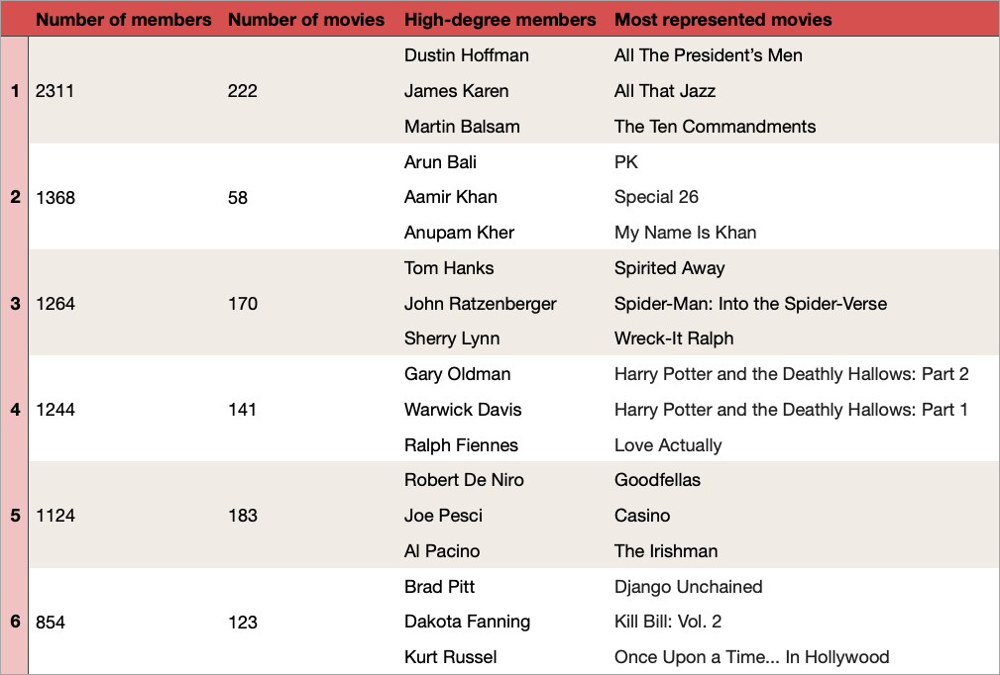

Communities
Using the Louvain method the best parition of the full graph (MÅSKE LINK?) into communities is found. A total of 88 communities are found, and the six largest communities are selected for further analysis.First let's take a quick look at the communitites. The table below lists the number of actors in the community (number of members), the number of unique movies which the community members have starred in (number of movies) the three members with the highest degree and the three movies which features the most of the community's members.

Just from this quick overview, some possible tendencies are already visible; judging from the names of the actors of community 2 this community could represent the Indian
movie industry. In community 3 the three most represented movies are all cartoons and since both John Ratzenberger and Sherry Lynn are voice actors frequently used by Disney,
this community could represent the animated movie industry. Finally, both the three actors and the three movies shown for community 4 are British, so this community
might represent the British movie industry.
We now dig further into the actors placed in the communities and into the genres, decades and countries which are represented in the communities through the actors.
We now dig further into the actors placed in the communities and into the genres, decades and countries which are represented in the communities through the actors.
Time
First, let's investigate whether any of the communities could represent a specific time period. The left plot below shows the average release year of the movies represented in each
community through the actors. Furthermore, the range of the release years of the represented movies is shown with the end points being the minumum and maximum release year. Similarly,
the right plot shows the average birth year and the range of birth years for the actors in each community.
For communities 2-5 the tendencies are quite similar. However, community 1 is different. The actors of this community tend to be significantly older than the actors
of the other communities. Although some new movies are represented in the community, we generally see that a lot of older movies are represented compared to the other communities. Let's investigate
these tendencies further. The left plot below shows the distribution of decades within each community, while the right plot shows the decade representation within the communities.
The distribution values are given by the fraction of movies represented in a community which was released in a specific decade. The representation is computed as the fraction of movies
released in a specific decade which are represented in the community. Hover your mouse over a colored part of a bar to see specific details about the decade distribution and the
decade representation.
It is clear that the decade distribution of community 1 is quite different compared to the other communities. More than 80% of the movies represented in this community were released before 1990.
In all of the other four communities, more than 60% the represented movies were released in 1990 or later.
If we take a look at the decade representation, we see that 90% of the movies released in the 1940s, 83% of the movies released in the 1950s and 82% of the movies released in the 1930s are represented in this community. More than half of the movies released in the 1920s, 1960s and 1970s are also represented in the community. For comparison, the highest representation of a "newer" decade is seen for the 1990s in community 5 where 37% of the movies released in this decade are represented.
Based on this analysis, it seems like community 1 represents the community of the "old" movie industry.
If we take a look at the decade representation, we see that 90% of the movies released in the 1940s, 83% of the movies released in the 1950s and 82% of the movies released in the 1930s are represented in this community. More than half of the movies released in the 1920s, 1960s and 1970s are also represented in the community. For comparison, the highest representation of a "newer" decade is seen for the 1990s in community 5 where 37% of the movies released in this decade are represented.
Based on this analysis, it seems like community 1 represents the community of the "old" movie industry.
Genre
Next, it will be investigated whether any of the communities could represent a specific genre of movies. For each community, the three most common
genres among the movies represented in each community are found. The left plot below shows how big a fraction of the movies represented in the
community that are associated with that genre. The right plot below shows how big a fraction of the movies associated with that genre
that are represented in the community.
From the left plot we see that in all 5 communities the most represented genre is Drama. This is no surprise given that Drama is by far the most
represented genre in the Data set. Although only 33% of the movies represented in community 3 are associated with the genre Animation, we see on
the right plot, that this actually corresponds to 84% of all movies associated with the genre. This observation supports the theory that community
3 may represent the animated movie industry. Other than that, none of the communities seems to be associated with specific any genre.
Country
Now let's investigate whether there is any truth in our theory about community 2 and 4 representing the Indian and British movie industry respectively. First,
we take a look at the birth countries of the actors in the communities. The left plot below shows the three most common birth countries for each community along with
the fraction of actors in the community born in these countries. The right plot shows the fraction of actors born in a specific country belonging to a specific community
for the three most common birth countries within the community.
In the communities 1, 3 and 5 more than 60% of the actors with known birth countries are born in USA. However, in community 2 and community 4 more than 80% of the actors
with known birth place are born in India and the United Kingdom, respectively. However, from the representation plot (to the right) we see that only 60% of the actors
born in India are in fact placed in community 2, while only 26% of the actors born in the United Kingdom are placed in community 4.
We now take a look at the release countries of the movies represented in the communities. The left plot below shows the three most common release countries for the movies represented in a community along with the fraction of represented movies which were released in the specific country. The right plot shows the fraction of movies released in a specific country that are represented in a specific community for the three most common release countries within the community.
We now take a look at the release countries of the movies represented in the communities. The left plot below shows the three most common release countries for the movies represented in a community along with the fraction of represented movies which were released in the specific country. The right plot shows the fraction of movies released in a specific country that are represented in a specific community for the three most common release countries within the community.
75% of the movies represented in community 2 were released in India, and in fact all movies released in India are represented in this community. For the remaining communities the most
common release country is USA, however for community 4, 34% of the represented movies were released in the UK. Furthermore, we see that 51% of the movies released in the UK are
represented in community 4. We also see that a third of the movies released in Japan are represented in community 3. Since Japan is known for making a lot of cartoons, this observation
corresponds very well with the fact that this community was found to represent the animated movie industry during the analysis of genres.
Based on the analysis of the release- and birth countries it seems that community 2 does in fact represent the Indian movie industry (or at least a part of it). Community 4 seems to represent a part of the British movie industry, however since only about half of the British actors in the data set are actually placed in this community, we must assume that other non-inspected communities may also represent different parts of the British movie industry. Or perhaps the remaining British actors are placed in communities which are tied together by other common attributes than the birth country.
Based on the analysis of the release- and birth countries it seems that community 2 does in fact represent the Indian movie industry (or at least a part of it). Community 4 seems to represent a part of the British movie industry, however since only about half of the British actors in the data set are actually placed in this community, we must assume that other non-inspected communities may also represent different parts of the British movie industry. Or perhaps the remaining British actors are placed in communities which are tied together by other common attributes than the birth country.
Degree
Finally, we make a quick analysis of the degrees of the actors in each community. This is motivated by the fact that at least two of the actors with the highest degrees in community 5,
Robert De Niro and Al Pacino, are very well known and have starred in a lot of movies over the years. Since we have not yet managed to find any way to characterize community 5, we therefore
wish to investigate whether this could be a community of some of the actors of Hollywood who have been very active for many years and who thus will most likely have a high degree in the graph.
The first plot below shows the range of degrees represented in each commuity along with the average degree of the actors in the community. The remaining plots show the degree distributions for the actors in the communities.
The first plot below shows the range of degrees represented in each commuity along with the average degree of the actors in the community. The remaining plots show the degree distributions for the actors in the communities.
The actors of community 5 do have a bit higher degree on average, than the actors in the remaining communities. We also see that the maximum degree occurring in this community is quite a lot higher than
the maximum degrees occurring in the remaining communities. However, there still are quite a few members of community who has a quite low degree, and thus we can not conclude that the community is purely
a group of well known and frequently used actors.
In summary... it seems like the four largest communities can be characterized as follows:
In summary... it seems like the four largest communities can be characterized as follows:
- Community 1: A community of actors starring in the "older" movies on the IMDB list
- Community 2: A community of actors starring in the Indian movies on the IMDB list
- Community 3: A community of actors "starring in" (putting voice to) the animated movies on the IMDB list
- Community 4: A community of actors starring in the British movies on the IMDB list